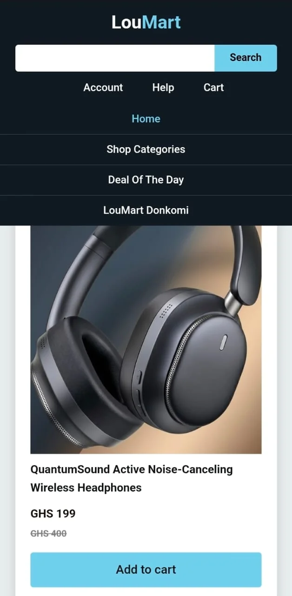

Storefront and categories
Product cards with imagery, names and prices, alongside dedicated category browsing pages.
Under active development
Selected work / Academic project / Level 200
My independent semester project for E-Business Architectures: translating familiar online shopping patterns into a responsive, multi-page website. The project continues to evolve; the live site is a work in progress.
Desktop and mobile views of the storefront, showing how product browsing adapts to different screens.


In my Level 200 E-Business Architectures course, I was tasked with developing a responsive e-commerce website. I worked on LouMart individually, using Amazon's storefront as a reference for navigation, product presentation and shopping-page structure.
Product cards with imagery, names and prices, alongside dedicated category browsing pages.
A deal-of-the-day page and a separate LouMart Donkomi section, including a video-led introduction.
A shopping-cart summary and login/signup form interfaces that communicate the intended shopping flow.
Shared CSS supports a consistent multi-page visual system, with attention to layout and navigation.
The project is structured as separate HTML pages with a shared
styles.css stylesheet. The repository includes
index.html, categories.html,
topdeal.html, donkomi.html,
cart.html, login.html,
signup.html and help.html, plus images
and video assets.
Publishing the site through GitHub Pages made the project accessible online without requiring a server application.
Scope note: The storefront is an academic frontend prototype. Product buttons, account forms and checkout navigation do not establish a functioning payment system, persistent shopping basket or authenticated customer accounts.
LouMart helped me practise independently organizing a website with multiple related pages, translating familiar retail layouts into HTML and CSS, and preparing a public demonstration through version control and GitHub Pages.
It also highlights a useful distinction in software development: building a convincing interface is not the same as building the underlying commerce infrastructure. A production store would need working cart state, authentication, inventory, secure checkout and order management.